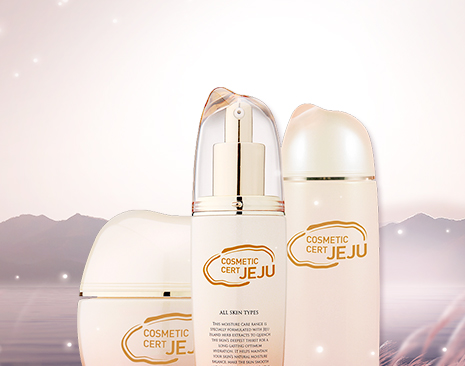
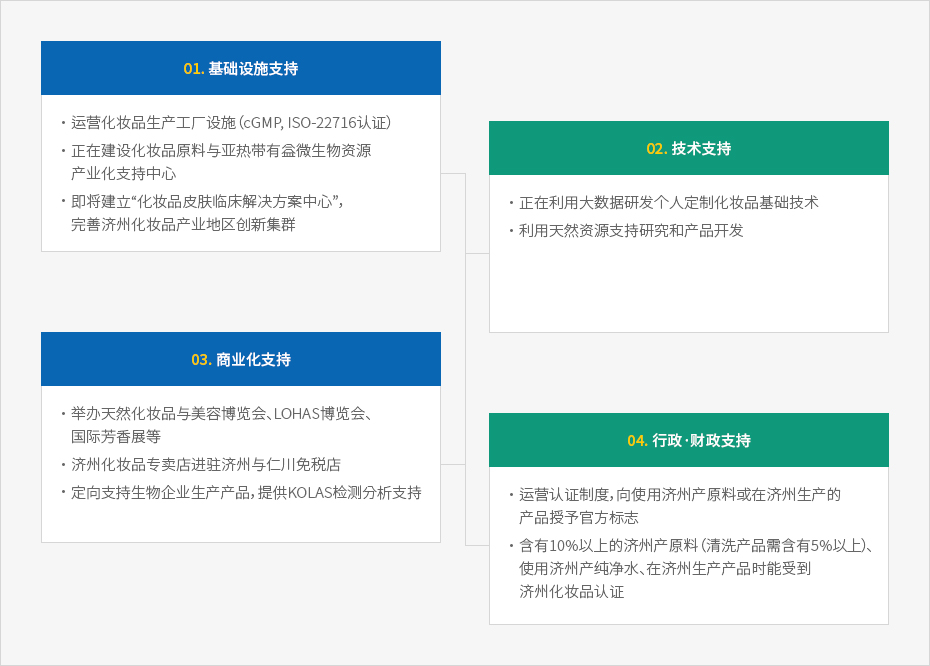

生物科技
- Home
- 投资环境
- 未来朝阳产业
- 生物科技
化妆品原料产业


化妆品产业从济州纯净独特的植被环境中提取天然资源，以持续的行政和财政支持为基础，让产量、产业规模、销售额逐年增长。
除了在亚洲大获成功的济州化妆品原料，济州也拥有从原料生产到销售的健全价值链和高水平研究设施。
此外，济州科技园还筛选出《国际化妆品成分词典手册（ICID）》所收录的济州生物资源材料和化妆品原料，刊发《济州天然化妆品原料手册》，并实行“济州化妆品认证制度”，以提升济州化妆品的价值，增强产业竞争力。
济州本身已经成为了一个享誉东亚的知名品牌，而主打清净济州品牌的生物与化妆品原料产业则具有无限潜力。
济州的代表性生物资源
-
清洁水源
- 长期流过火山基岩层，杂质滤尽，水质纯净
- 济州特别自治道开发公社的"三多水"将济州地下水商品化并取得成功
- 1998年开售，20年间销量稳居韩国市场第一，2018年以84万吨创韩国最高销量记录
-
溶岩海水
- 海水经火山基岩层过滤后生成的含盐地下水
- 内含钙、镁、钒、锗等天然有益矿物质，应用范围广泛
- 化妆品和食品类企业现已进驻溶岩海水产业化支持中心1号楼和2号楼
-
火山岩泥
- 是指岩浆喷发时产生的天然陶瓷，广泛分布于整个济州岛
- 内含丰富矿物成分，具有吸收、吸附、抗菌功能，能有效释放远红外线和负离子等
-
海藻
- 马尾藻、腔昆布、裙带菜、鹿尾菜等700多种海藻栖息于此
- 备受瞩目的食品、医药品、化妆品原料
-
山茶·绿茶·油菜·柑橘
- 既是济州的代表性特产，也是经过验证的地方特色化妆品原料
- 济州的天然主义化妆品品牌已经推出多种产品
针对生物产业的多种支持


-
01.基础设施支持
- 运营化妆品生产工厂设施（cGMP, ISO-22716认证）
- 正在建设化妆品原料与亚热带有益微生物资源产业化支持中心
- 即将建立“化妆品皮肤临床解决方案中心”，完善济州化妆品产业地区创新集群
-
02. 技术支持
- 正在利用大数据研发个人定制化妆品基础技术
- 利用天然资源支持研究和产品开发
-
03. 商业化支持
- 举办天然化妆品与美容博览会、LOHAS博览会、国际芳香展等
- 济州化妆品专卖店进驻济州与仁川免税店
- 定向支持生物企业生产产品，提供KOLAS检测分析支持
-
04. 行政支持
- 运营化妆品生产工厂设施（cGMP, ISO-22716认证）
- 正在建设化妆品原料与亚热带有益微生物资源产业化支持中心
- 即将建立“化妆品皮肤临床解决方案中心”，完善济州化妆品产业地区创新集群